1016C10 cylinder head - r + r and replace gasket
- Path
- Procedures > 10 ENGINE > 1016 CYLINDER HEAD/S > 1016C cylinder head - remove + re-fit > 1016C10 cylinder head - r + r and replace gasket
- Kind
- repair procedure (removal / refitting; the operation number is the code)
- Applies to
- engines: 1.6 TS, 2.0 TS, 1.9 JTD 8V, 1.9 JTD 16V; all production periods
- Interactive page
- https://sloeber94.github.io/elrnDB-a147/en/#/3024768
Applies to: engines: 1.6 TS; all production periods; only with equipment: 103 CV
 Removing
Removing
 Refitting
RefittingPosition the vehicle on the ramp.
Ensure that the ignition key is in the OFF position, then disconnect the negative battery terminal (-).
 | Name | Connector |
|---|---|---|
- | Battery |
Proceed with the removal 4450B10 Front WHEEL (one) - R.R. (Right side).
Proceed with the removal 7055B64 Engine compartment DUST shield in front wheel arch (one), left or right - R.R. (Right side).
1. Disconnect the lower coolant outlet hose from the radiator and drain the engine coolant.
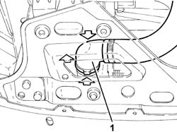
Applies to: engines: 1.6 TS; all production periods; only with equipment: 103 CV
Proceed with removal 1016A40 ignition coil cover on cylinder head- r+r .
Proceed with removal 5510C14 ignition coil/s - r+r .
Proceed with removal 1016A20 single cam cover - r + r and replace gasket .
Proceed with removal 1056B60 single fuel manifold pipe, with injectors - r + r .
Proceed with removal 1072B50 sleeves connecting air capacity box to inlet manifold is - r+r .
1. Undo the bolts (1a) and release the mounting bracket (1b) for the power assisted steering fluid reservoir from the intake manifold.
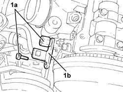
Applies to: engines: 1.6 TS; all production periods; only with equipment: 103 CV
Proceed with removal 1072C44 exhaust manifold heat shield on bulkhead - r+r .
1. Undo the nut securing the engine oil dipstick to the exhaust manifold.
2. Undo the nuts fixing the catalytic converter to the manifold.
3. Disconnect the engine coolant system supply pipe from the water pump rigid inlet pipe.
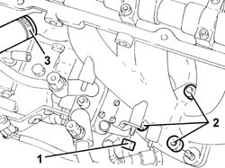
Applies to: engines: 1.6 TS; all production periods; only with equipment: 103 CV
1. Disconnect the upper coolant inlet hose to the radiator, thermostat side.
2. Disconnect the coolant supply pipe to the air conditioning system heater, thermostat side.
3. Disconnect the coolant return pipe from the climate control system heater, on the side of the rigid fluid intake to the coolant pump.
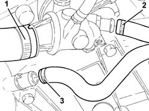
Applies to: engines: 1.6 TS; all production periods; only with equipment: 103 CV
Proceed with removal 1092G10 single engine belt r r .
Proceed with removal 1092G20 engine component single belt fixed tensioner - one - r + r .
Proceed with removal 1092A10 Crankshaft services PULLEY - R.R. .
Proceed with removal 1032D12 timing system protective cover(s) - r + r .
Proceed with removal 1032B10 toothed timing belt - r + r for timing adjustment or replacement .
1. Undo the bolts (1a) and remove the cylinder head (1b).
2. Remove the cylinder head gasket.
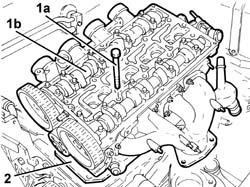
Applies to: engines: 1.6 TS; all production periods; only with equipment: 103 CV
Refitting
RemovingPlace the cylinder head gasket back in its housing.
Position the cylinder head on the cylinder block, taking care that the camshafts are positioned with the front cams facing outwards (valves closed).
1. Tighten the bolts (1a) fixing the cylinder head to the recommended torque using the angular tightening tool (1b).
 | Fastening | Component | Ø | Value (daNm) |
|---|---|---|---|---|
1a | Bolt | CYLINDER HEAD | M10 | 4.0+90˚+90˚+90˚ |
 | Name | Country |
|---|---|---|
1b | Protractor | 1.860.942.000 |
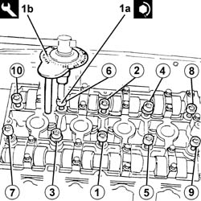
Applies to: engines: 1.6 TS; all production periods; only with equipment: 103 CV
Proceed with refitting 1032B10 toothed timing belt - r + r for timing adjustment or replacement .
Proceed with refitting 1032D12 timing system protective cover(s) - r + r .
Proceed with refitting 1092A10 Crankshaft services PULLEY - R.R. .
Proceed with refitting 1092G20 engine component single belt fixed tensioner - one - r + r .
Proceed with refitting 1092G10 single engine belt r r .
Connect the coolant return hose from the climate control system heater on the side of the rigid inlet pipe to the water pump.
Connect the engine coolant supply pipe from the climate control system heater, thermostat side.
Connect the upper coolant inlet hose to the radiator, thermostat side.
Connect the engine cooling system supply pipe to the water pump rigid outlet pipe.
1. Tighten the nuts fixing the catalytic converter to the manifold to the recommended torque.
| Fastening | Component | Ø | Value (daNm) |
|---|---|---|---|---|
1 | Nut | CATALYTIC CONVERTER (ONE) | M10 | (Manifold side) 4.1 ÷ 5.0 |
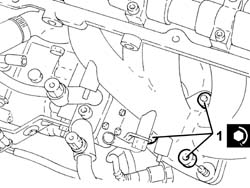
Applies to: engines: 1.6 TS; all production periods; only with equipment: 103 CV
Tighten the nut securing the tube for the oil dipstick to the exhaust manifold.
Proceed with refitting 1072C44 exhaust manifold heat shield on bulkhead - r+r .
Place the power assisted steering reservoir mounting bracket back in its housing and secure it using the bolts.
Proceed with refitting 1072B50 sleeves connecting air capacity box to inlet manifold is - r+r .
Proceed with refitting 1056B60 single fuel manifold pipe, with injectors - r + r .
Proceed with refitting 1016A20 single cam cover - r + r and replace gasket .
Proceed with refitting 5510C14 ignition coil/s - r+r .
Proceed with refitting 1016A40 ignition coil cover on cylinder head- r+r .
Connect the lower coolant outlet hose from the radiator.
Proceed with the refitting 7055B64 Engine compartment DUST shield in front wheel arch (one), left or right - R.R. (Right side).
Proceed with the refitting 4450B10 Front WHEEL (one) - R.R. (Right side).
Refill the cooling system 0010T20 coolant change .
Connect the negative (-) battery terminal.
Remove the car from the ramps.
Applies to: engines: 1.6 TS; all production periods; only with equipment: 120 CV
Removing
RefittingPosition the vehicle on the ramp.
Proceed with removal 5530B10 battery - r+r .
Proceed with the removal 4450B10 Front WHEEL (one) - R.R. (Right side).
Proceed with the removal 7055B64 Engine compartment DUST shield in front wheel arch (one), left or right - R.R. (Right side).
1. Disconnect the lower coolant outlet hose from the radiator and drain the engine coolant.
Applies to: engines: 1.6 TS; all production periods; only with equipment: 120 CV
Proceed with removal 1016A40 ignition coil cover on cylinder head- r+r .
Proceed with removal 5510C14 ignition coil/s - r+r .
Proceed with removal 1016A20 single cam cover - r + r and replace gasket .
Proceed with removal 1056B60 single fuel manifold pipe, with injectors - r + r .
Proceed with removal 1072B50 sleeves connecting air capacity box to inlet manifold is - r+r .
1. Undo the bolts (1a) and remove the bracket (1b) connecting the intake manifold to the bracket on the engine for the reaction rod.
Applies to: engines: 1.6 TS; all production periods; only with equipment: 120 CV
1. Disconnect the coolant supply pipe to the air conditioning system heater, thermostat side.
2. Disconnect the coolant return pipe from the air conditioning system heater, on the side of the rigid fluid intake to the coolant pump.
3. Disconnect the flexible coolant supply pipe from the rigid pipe to the engine oil heat exchanger.
4. Disconnect the lower coolant outlet sleeve from the radiator.
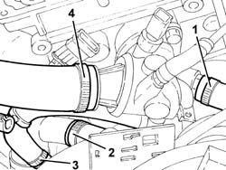
Applies to: engines: 1.6 TS; all production periods; only with equipment: 120 CV
Proceed with removal 1072C44 exhaust manifold heat shield on bulkhead - r+r .
1. Undo the bolt fixing the engine oil dipstick tube.
2. Remove the tube for the engine oil dipstick.

Applies to: engines: 1.6 TS; all production periods; only with equipment: 120 CV
1. Unscrew the nuts securing the catalytic preconverter to the exhaust manifold.
2. Undo the nuts fixing the catalytic pre-converter to the mounting bracket.

Applies to: engines: 1.6 TS; all production periods; only with equipment: 120 CV
1. Undo the plug and drain the engine oil.
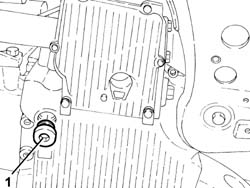
Applies to: engines: 1.6 TS; all production periods; only with equipment: 120 CV
1. Release and remove the engine oil filter using a suitable tool.
2. Undo the pin (2a) and disconnect the engine oil heat exchanger (2b) from the crankshaft oil seal front cover.

Applies to: engines: 1.6 TS; all production periods; only with equipment: 120 CV
1. Disconnect the engine coolant system supply pipe from the water pump rigid inlet pipe.

Applies to: engines: 1.6 TS; all production periods; only with equipment: 120 CV
Proceed with removal 1092G10 single engine belt r r .
Proceed with removal 1092A10 Crankshaft services PULLEY - R.R. .
Proceed with removal 1092G20 engine component single belt fixed tensioner - one - r + r .
Proceed with removal 1032D12 timing system protective cover(s) - r + r .
Proceed with removal 1032B10 toothed timing belt - r + r for timing adjustment or replacement .
1. Undo the bolts (1a) and remove the cylinder head (1b).
2. Remove the cylinder head gasket.
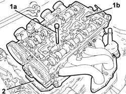
Applies to: engines: 1.6 TS; all production periods; only with equipment: 120 CV
Refitting
RemovingPlace the cylinder head gasket back in its housing.
Position the cylinder head on the cylinder block, taking care that the camshafts are positioned with the front cams facing outwards (valves closed).
1. Tighten the bolts (1a) fixing the cylinder head to the recommended torque using the angular tightening tool (1b).
| Fastening | Component | Ø | Value (daNm) |
|---|---|---|---|---|
1a | Bolt | CYLINDER HEAD | M10 | 4.0+90˚+90˚+90˚ |
| Name | Country |
|---|---|---|
1b | Protractor | 1.860.942.000 |

Applies to: engines: 1.6 TS; all production periods; only with equipment: 120 CV
Proceed with refitting 1032B10 toothed timing belt - r + r for timing adjustment or replacement .
Proceed with refitting 1032D12 timing system protective cover(s) - r + r .
Proceed with refitting 1092G20 engine component single belt fixed tensioner - one - r + r .
Proceed with refitting 1092A10 Crankshaft services PULLEY - R.R. .
Proceed with refitting 1092G10 single engine belt r r .
Connect the engine cooling system supply pipe to the water pump rigid outlet pipe.
Place the engine oil heat exchanger back in its housing and fix it to the crankshaft front oil seal cover using the pin.
Refit the engine oil filter in its seating and tighten it fully by hand.
1. Tighten the engine oil drain plug to the crankcase sump to the recommended torque.
| Fastening | Component | Ø | Value (daNm) |
|---|---|---|---|---|
1 | - | ENGINE OIL DRAIN PLUG | M18 | (Crankcase sump side) 1.8 ÷ 2.2 |

Applies to: engines: 1.6 TS; all production periods; only with equipment: 120 CV
Tighten the nuts fixing the front section of the exhaust pipe to the mounting bracket.
Tighten the nuts fixing the catalytic pre-converter to the exhaust manifold to the recommended torque.
| Fastening | Component | Ø | Value (daNm) |
|---|---|---|---|---|
- | Nut | CATALYTIC PRE-CONVERTER | M8 | (Manifold side) 2.7 ÷ 3.3 |
Place the engine oil dipstick tube in its seating and fix it using the bolt.
Proceed with refitting 1072C44 exhaust manifold heat shield on bulkhead - r+r .
Connect the lower coolant outlet hose to the radiator.
Connect the flexible coolant supply pipe to the rigid pipe to the engine oil heat exchanger.
Connect the coolant return hose from the air conditioning system heater on the side of the rigid inlet pipe to the water pump.
Connect the coolant supply pipe to the air conditioning system heater, thermostat side.
Place the bracket connecting the intake manifold to the bracket on the engine for the reaction rod back in its housing and fix it using the bolts.
Proceed with refitting 1072B50 sleeves connecting air capacity box to inlet manifold is - r+r .
Proceed with refitting 1056B60 single fuel manifold pipe, with injectors - r + r .
Proceed with refitting 1016A20 single cam cover - r + r and replace gasket .
Proceed with refitting 5510C14 ignition coil/s - r+r .
Proceed with refitting 1016A40 ignition coil cover on cylinder head- r+r .
Connect the lower coolant outlet hose from the radiator.
Proceed with the refitting 7055B64 Engine compartment DUST shield in front wheel arch (one), left or right - R.R. (Right side).
Proceed with the refitting 4450B10 Front WHEEL (one) - R.R. (Right side).
Proceed with refitting 5530B10 battery - r+r .
Refill the engine oil lubrication system 1084A10 ENGINE OIL - Check level and top up, if necessary .
Refill the cooling system 0010T20 coolant change .
Remove the car from the ramps.
Applies to: engines: 2.0 TS; all production periods
Removing
RefittingPosition the vehicle on the ramp.
Proceed with removal 5530B10 battery - r+r .
Proceed with the removal 4450B10 Front WHEEL (one) - R.R. (Right side).
Proceed with the removal 7055B64 Engine compartment DUST shield in front wheel arch (one), left or right - R.R. (Right side).
Proceed with removal 7055B54 under-engine guard - r r .
1. Disconnect the lower coolant outlet hose from the radiator and drain the engine coolant.
Applies to: engines: 2.0 TS; all production periods
Proceed with removal 1016A40 ignition coil cover on cylinder head- r+r .
Proceed with removal 5510C14 ignition coil/s - r+r .
Proceed with removal 1016A20 single cam cover - r + r and replace gasket .
Proceed with removal 1056B60 single fuel manifold pipe, with injectors - r + r .
Proceed with removal 1072D10 modular inlet manifold - r+r .
1. Undo the bolts (1a) and remove the bracket (1b) connecting the intake manifold to the bracket on the engine for the reaction rod.
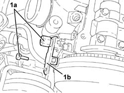
Applies to: engines: 2.0 TS; all production periods
1. Disconnect the coolant supply pipe to the air conditioning system heater, thermostat side.
2. Disconnect the coolant return pipe from the air conditioning system heater, on the side of the rigid fluid intake to the coolant pump.
3. Disconnect the flexible coolant supply pipe from the rigid pipe to the engine oil heat exchanger.
4. Disconnect the upper coolant inlet hose to the radiator, thermostat side.
Applies to: engines: 2.0 TS; all production periods
Proceed with removal 1072C44 exhaust manifold heat shield on bulkhead - r+r .
1. Undo the bolt fixing the engine oil dipstick tube.
2. Remove the tube for the engine oil dipstick.
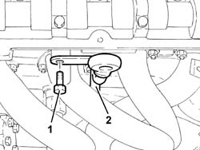
Applies to: engines: 2.0 TS; all production periods
1. Unscrew the nuts securing the catalytic preconverter to the exhaust manifold.
2. Undo the nuts fixing the catalytic pre-converter to the mounting bracket.
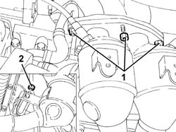
Applies to: engines: 2.0 TS; all production periods
1. Undo the plug and drain the engine oil.
Applies to: engines: 2.0 TS; all production periods
1. Release and remove the engine oil filter using a suitable tool.
2. Undo the pin (2a) and disconnect the engine oil heat exchanger (2b) from the crankshaft oil seal front cover.
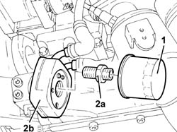
Applies to: engines: 2.0 TS; all production periods
1. Disconnect the engine coolant system supply pipe from the water pump rigid inlet pipe.
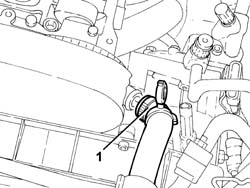
Applies to: engines: 2.0 TS; all production periods
Proceed with removal 1092G10 single engine belt r r .
Proceed with removal 1092A10 Crankshaft services PULLEY - R.R. .
Proceed with removal 1092G20 engine component single belt fixed tensioner - one - r + r .
Proceed with removal 1092G14 engine component single belt mobile tensioner - r + r .
Proceed with removal 1032D12 timing system protective cover(s) - r + r .
Proceed with removal 1092E10 counter-rotating shaft drive toothed belt - r + r .
Proceed with removal 1032B10 toothed timing belt - r + r for timing adjustment or replacement .
1. Undo the bolts (1a) and remove the cylinder head (1b).
2. Remove the cylinder head gasket.
Applies to: engines: 2.0 TS; all production periods
Refitting
RemovingPlace the cylinder head gasket back in its housing.
Position the cylinder head on the cylinder block, taking care that the camshafts are positioned with the front cams facing outwards (valves closed).
1. Tighten the bolts (1a) fixing the cylinder head to the recommended torque using the angular tightening tool (1b).
| Fastening | Component | Ø | Value (daNm) |
|---|---|---|---|---|
1a | Bolt | CYLINDER HEAD | M10 | (Engine crankcase side) 4.0 + 90˚ + 90˚ + 90 ˚ |
| Name | Country |
|---|---|---|
1b | Protractor | 1.860.942.000 |
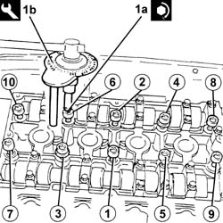
Applies to: engines: 2.0 TS; all production periods
Proceed with refitting 1032B10 toothed timing belt - r + r for timing adjustment or replacement .
Proceed with refitting 1092E10 counter-rotating shaft drive toothed belt - r + r .
Proceed with refitting 1032D12 timing system protective cover(s) - r + r .
Proceed with refitting 1092G14 engine component single belt mobile tensioner - r + r .
Proceed with refitting 1092G20 engine component single belt fixed tensioner - one - r + r .
Proceed with refitting 1092A10 Crankshaft services PULLEY - R.R. .
Proceed with refitting 1092G10 single engine belt r r .
Connect the engine cooling system supply pipe to the water pump rigid outlet pipe.
Place the engine oil heat exchanger back in its housing and fix it to the crankshaft front oil seal cover using the pin.
Refit the engine oil filter in its seating and tighten it fully by hand.
1. Tighten the engine oil drain plug to the crankcase sump to the recommended torque.
| Fastening | Component | Ø | Value (daNm) |
|---|---|---|---|---|
1 | - | ENGINE OIL DRAIN PLUG | M18 | (Crankcase sump side) 1.8 ÷ 2.2 |
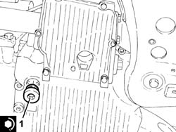
Applies to: engines: 2.0 TS; all production periods
Tighten the nuts fixing the catalytic pre-converter to the mounting bracket to the recommended torque.
| Fastening | Component | Ø | Value (daNm) |
|---|---|---|---|---|
- | Nut | CATALYTIC PRE-CONVERTER | M8 | (Manifold side) 2.7 ÷ 3.3 |
Tighten the nuts fixing the front section of the exhaust pipe to the mounting bracket.
Place the engine oil dipstick tube in its seating and fix it using the bolt.
Proceed with refitting 1072C44 exhaust manifold heat shield on bulkhead - r+r .
Connect the upper coolant inlet hose to the radiator, thermostat side.
Connect the flexible coolant supply pipe to the rigid pipe to the engine oil heat exchanger.
Connect the coolant return hose from the air conditioning system heater on the side of the rigid inlet pipe to the water pump.
Connect the coolant supply pipe to the air conditioning system heater, thermostat side.
Place the bracket connecting the intake manifold to the bracket on the engine for the reaction rod back in its housing and fix it using the bolts.
Proceed with refitting 1072D10 modular inlet manifold - r+r .
Proceed with refitting 1056B60 single fuel manifold pipe, with injectors - r + r .
Proceed with refitting 1016A20 single cam cover - r + r and replace gasket .
Proceed with refitting 5510C14 ignition coil/s - r+r .
Proceed with refitting 1016A40 ignition coil cover on cylinder head- r+r .
Connect the lower coolant outlet hose from the radiator.
Proceed with refitting 7055B54 under-engine guard - r r .
Proceed with the refitting 7055B64 Engine compartment DUST shield in front wheel arch (one), left or right - R.R. (Right side).
Proceed with the refitting 4450B10 Front WHEEL (one) - R.R. (Right side).
Proceed with refitting 5530B10 battery - r+r .
Refill the engine oil lubrication system 1084A10 ENGINE OIL - Check level and top up, if necessary .
Refill the cooling system 0010T20 coolant change .
Remove the car from the ramps.
Applies to: engines: 1.9 JTD 8V; all production periods
Removing
Refitting1008C10 power unit upper reaction link r r
1016A10 sound-proofing cover - r + r
1008C14 engine link bracket - r r
7055B64 Engine compartment DUST shield in front wheel arch (one), left or right - R.R.
1092G10 single engine belt r r
1092A10 Crankshaft services PULLEY - R.R.
1060G80 ds electric injection control unit - r r
1032B10 toothed timing belt - r + r for timing adjustment or replacement
Position a suitable container for collecting the coolant fluid.
Disconnect the lower radiator pipe and completely drain the engine coolant into the special container.
1. Disconnect the recirculation pipe (1a) and the water supply pipe (1b) to the rigid water supply pipe to the pump from the engine coolant reservoir.
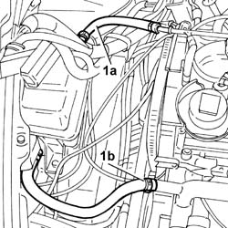
Applies to: engines: 1.9 JTD 8V; all production periods
1. Disconnect the engine oil vapour recovery pipes (1a) and (1b) from the tappet cover.
2. Disconnect the upper radiator pipe from the thermostat.
3. Disconnect the vacuum pipe from the vacuum unit.
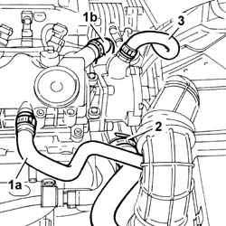
Applies to: engines: 1.9 JTD 8V; all production periods
1. Disconnect the upper flexible coolant pipe (1a) and the lower flexible coolant pipe (1b) from the rigid supply section to the engine oil heat exchanger.
2. Undo the fixing bolts (2a) and remove the rigid section of the supply pipe to the heat exchanger.
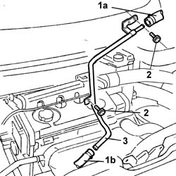
Applies to: engines: 1.9 JTD 8V; all production periods
1. Disconnect the engine coolant pipes connected to the rigid pipe.
2. Undo the bolts fixing the pump rigid water inlet pipe.
3. Remove the rigid pump coolant inlet pipe, recovering the gasket underneath.
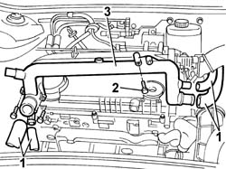
Applies to: engines: 1.9 JTD 8V; all production periods
1. Undo the retaining bolts.
2. Remove the heat shield for the exhaust manifold.
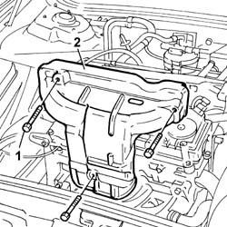
Applies to: engines: 1.9 JTD 8V; all production periods
1. Undo the bolt (1a) fixing the turbocharger reinforcement bracket (1b) to the cylinder block/crankcase.
2. Undo the bolts (2a) fixing the turbocharger rigid oil return pipe (2b).
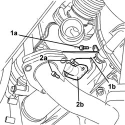
Applies to: engines: 1.9 JTD 8V; all production periods
1. Undo the bolts (1a) fixing the rigid EGR pipe (1b) to the exhaust manifold.
2. Undo the fixing nuts (2a) and release the exhaust manifold/turbocharger assembly (2b) from the cylinder head pins.
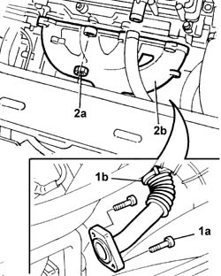
Applies to: engines: 1.9 JTD 8V; all production periods
1. Open the band and disconnect the air pipe from the throttle body.
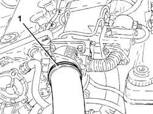
Applies to: engines: 1.9 JTD 8V; all production periods
1. Disconnect the two supply and return pipes to the heater from the thermostat.
2. Disconnect the electrical connection for the engine coolant temperature sensor.
| Name | Connector |
|---|---|---|
2 | Engine temperature sender unit |
3. Disconnect the vacuum pipe (3a) to the vacuum reservoir and the pipe (3b) to the variable geometry turbocharger from the connectors on the vacuum pipe.
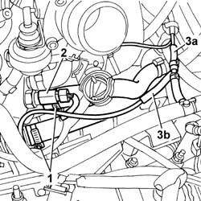
Applies to: engines: 1.9 JTD 8V; all production periods
1. Undo the nuts fixing the return manifold to the intake manifold.
2. Disconnect the recirculation pipe.
3. Remove the rigid supply pipe from the pressure pump to the single fuel supply manifold.
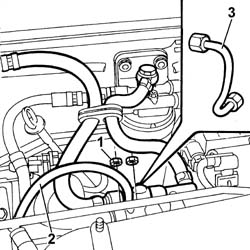
Applies to: engines: 1.9 JTD 8V; all production periods
1. Disconnect the electrical connections (1a), (1b), (1c), (1d), (1e) and (1f).
| Name | Connector |
|---|---|---|
1a | Injector |
| Name | Connector |
|---|---|---|
1b | Air conditioning compressor engagement electro-magnet |
| Name | Connector |
|---|---|---|
1c | Fuel pressure sensor |
| Name | Connector |
|---|---|---|
1d | EGR solenoid |
| Name | Connector |
|---|---|---|
1e | Turbocharging sensor |
| Name | Connector |
|---|---|---|
1f | Timing sensor. |
| Name | Connector |
|---|---|---|
- | Plug preheating control unit |
2. Undo the retaining bolts (2a) and remove the injection wiring (2b).
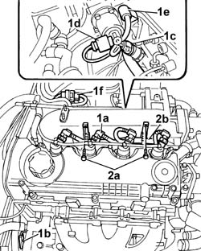
Applies to: engines: 1.9 JTD 8V; all production periods
1. Undo the bolts fixing the tappet cover to the cylinder head.
2. Remove the tappet cover with vapour separator incorporated.
3. Undo the fixing bolts (3a) and remove the timing belt side shield (3b).
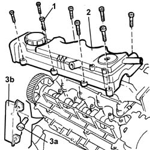
Applies to: engines: 1.9 JTD 8V; all production periods
Remove the oil present in the cylinder head.
1. Undo the bolts fixing the cylinder head.
2. Position a bracket (2a) fixed to the exhaust manifold stud and fasten the hook (2b) to it for moving the cylinder head later on in safety.
3. Position a second hook at the intake manifold.
Secure the chains to a hydraulic lift.
4. Lift and remove the cylinder head, complete with intake manifold.
Recover the cylinder head gasket.
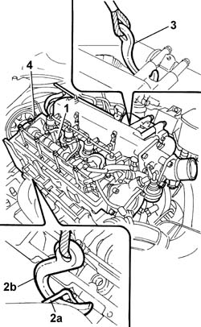
Applies to: engines: 1.9 JTD 8V; all production periods
Refitting
RemovingFit a new cylinder head gasket to the cylinder block/crankcase, taking care that it is the same thickness as the old one.
The material from which these gaskets are made undergoes a polymerisation process during the operation of the engine so that they become considerably harder during usage. In order for the polymerization of the gasket to take place it is necessary to follow the precautions listed below.
Keep the gasket sealed in its nylon container and only take it out shortly before fitting.
Do not lubricate it or get oil or grease on it.
Position the cylinder head on the cylinder block/crankcase.
Release the supporting hooks and remove the mounting bracket.
1. Tighten the bolts securing the cylinder head to the cylinder block/crankcase to the recommended torque following the order shown in the diagram and using the angular tightening tool.
| Fastening | Component | Ø | Value (daNm) |
|---|---|---|---|---|
- | Bolt | CYLINDER HEAD | M12 | (Engine crankcase side) 6.5 + 90˚ + 90˚ + 90˚ |
| Name | Country |
|---|---|---|
1 | Protractor | 1.860.942.000 |
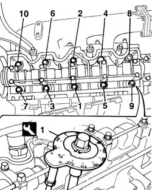
Applies to: engines: 1.9 JTD 8V; all production periods
Remove the brackets, chains and hooks positioned previously for lifting the cylinder head.
Fit the tappet cover on the cylinder head.
Tighten the bolts fixing the tappet cover to torque.
| Fastening | Component | Ø | Value (daNm) |
|---|---|---|---|---|
- | Bolt | CAM COVER | M6 | WHITE |
Connect the electrical connections disconnected previously.
| Name | Connector |
|---|---|---|
- | Injector |
| Name | Connector |
|---|---|---|
- | Air conditioning compressor engagement electro-magnet |
| Name | Connector |
|---|---|---|
- | Fuel pressure sensor |
| Name | Connector |
|---|---|---|
- | EGR solenoid |
| Name | Connector |
|---|---|---|
- | Turbocharging sensor |
| Name | Connector |
|---|---|---|
- | Timing sensor. |
| Name | Connector |
|---|---|---|
- | Plug preheating control unit |
Tighten the bolts fixing the injection wiring to the intake manifold.
Fit a new rigid supply pipe from the pressure pump to the single fuel supply manifold and tighten the connectors to the recommended torque.
| Fastening | Component | Ø | Value (daNm) |
|---|---|---|---|---|
- | Connector | PRESSURE PUMP LINE TO FUEL MANIFOLD | M12 | (Pressure pump side) 2.2 |
| Fastening | Component | Ø | Value (daNm) |
|---|---|---|---|---|
- | Connector | PRESSURE PUMP LINE TO FUEL MANIFOLD | M14 | (Fuel manifold side) 2.2 |
Tighten the nuts fixing the return manifold to the intake manifold.
Connect the fuel recirculation pipe to the injectors.
Connect the vacuum pipe to the vacuum reservoir and the pipe to the variable geometry turbocharger to the connectors on the vacuum pipe.
Connect the electrical connection for the engine coolant temperature sensor.
| Name | Connector |
|---|---|---|
- | Engine temperature sender unit |
Connect the two heater supply and return pipes to the thermostat.
Connect the throttle casing air pipe.
Fit the exhaust manifold/turbocharger assembly on the cylinder head pins.
Tighten the nuts securing the manifold to the cylinder head to the recommended torque.
| Fastening | Component | Ø | Value (daNm) |
|---|---|---|---|---|
- | Nut | EXHAUST MANIFOLD/S | M8 | (Cylinder head side) 2.5 |
Position the EGR exhaust gas supply pipe and tighten the bolts fixing it to the exhaust manifold.
Fit the exhaust manifold heat shield.
Fit the pump rigid water inlet pipe with a new gasket underneath.
Tighten the bolts fixing the water inlet rigid pipe to torque.
| Fastening | Component | Ø | Value (daNm) |
|---|---|---|---|---|
- | Bolt | COOLANT PUMP RIGID INLET PIPE | M6 | (Cylinder head) 0.9 |
Connect the engine coolant pipes to the rigid pipe.
Fit the rigid section of the supply pipe to the heat exchanger and tighten the fixing bolts.
Connect the upper and lower flexible coolant pipes to the rigid section of the supply pipe to the engine oil heat exchanger.
Connect the vacuum pipe to the vacuum unit.
Connect the upper radiator hose to the thermostat.
Connect the engine oil vapour recovery pipes to the tappet cover.
Connect the recirculation pipe and the coolant supply pipe to the rigid supply pipe to the pump to the engine coolant reservoir.
Connect the lower radiator hose.
1032B10 toothed timing belt - r + r for timing adjustment or replacement
1060G80 ds electric injection control unit - r r
1092A10 Crankshaft services PULLEY - R.R.
1092G10 single engine belt r r
7055B64 Engine compartment DUST shield in front wheel arch (one), left or right - R.R.
1008C14 engine link bracket - r r
1016A10 sound-proofing cover - r + r
Applies to: engines: 1.9 JTD 16V; all production periods
Removing
RefittingPosition the vehicle on the ramp
Proceed with removal 1016A10 sound-proofing cover - r + r .
Ensure that the ignition key is in the OFF position, then disconnect the negative battery terminal (-).
| Name | Connector |
|---|---|---|
- | Battery |
Proceed with removal 1008C10 power unit upper reaction link r r .
Proceed with removal 1060G80 ds electric injection control unit - r r .
Proceed with removal 4450B04 right front wheel r r .
Proceed with removal 7055B54 under-engine guard - r r .
Proceed with removal 7055B91 Right front WHEEL ARCH LINER - R.R. .
Proceed with removal 1092G10 single engine belt r r .
Proceed with removal 1092A10 Crankshaft services PULLEY - R.R. .
Proceed with removal 1092G20 engine component single belt fixed tensioner - one - r + r .
Proceed with removal 1032D12 timing system protective cover(s) - r + r .
1. Undo the bolts (1a) and (1b), then remove the bracket on the engine for the reaction rod (1c).
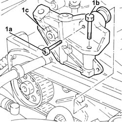
Applies to: engines: 1.9 JTD 16V; all production periods
1. Loosen the nut securing the timing belt mobile tensioner
2. Prise off and remove the timing belt.
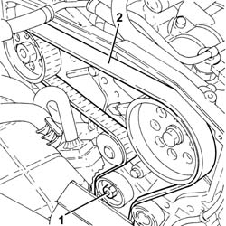
Applies to: engines: 1.9 JTD 16V; all production periods
1. Loosen the band and disconnect the lower radiator coolant outlet hose from the radiator, water pump rigid inlet pipe end.
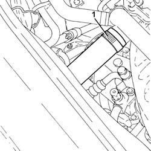
Applies to: engines: 1.9 JTD 16V; all production periods
1. Disconnect the electrical connections from the injectors.
| Name | Connector |
|---|---|---|
1 | Injector |
2. Disconnect the electrical connection from the cam angle sensor.
| Name | Connector |
|---|---|---|
2 | Timing sensor. |
3. Disconnect the electrical connection for the air conditioning compressor.
| Name | Connector |
|---|---|---|
3 | Air conditioning compressor engagement electro-magnet |
Release the electrical wiring from the band on the timing cover.
4. Undo the bolts fastening the cable duct and move the electrical wiring aside.
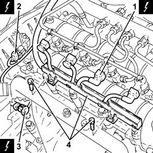
Applies to: engines: 1.9 JTD 16V; all production periods
1. Push clips (1a) by hand and disconnect the pipe from the injectors to the fuel recovery manifold (1b), injectors side and move it aside.
2. Undo the connectors (2a), (2b) and remove the pipe from the fuel manifold to the injectors (2c).
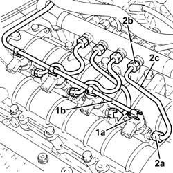
Applies to: engines: 1.9 JTD 16V; all production periods
1. Undo the nuts fixing the injector brackets.
2. Remove the injectors (2a) complete with brackets using the tool (2b).
| Name | Country |
|---|---|---|
2b | Extractor | 1.870.897.300 |
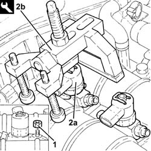
Applies to: engines: 1.9 JTD 16V; all production periods
1. Undo the connectors (1a), (1b) and remove the pipe from the pressure pump to the fuel manifold (1c).
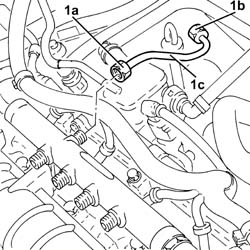
Applies to: engines: 1.9 JTD 16V; all production periods
1. Disconnect the electrical connection from the fuel pressure sensor.
| Name | Connector |
|---|---|---|
1 | Fuel pressure sensor |
2. Undo the bolts (2a) and remove the single fuel manifold pipe (2b) complete with fuel pressure sensor (2c).
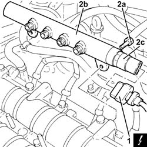
Applies to: engines: 1.9 JTD 16V; all production periods
Proceed with removal 5530B10 battery - r+r .
1. Loosen the band and disconnect the vacuum pipe from the brake servo.
2. Loosen the band and disconnect the engine oil vapour recovery pipe from the engine oil filler.
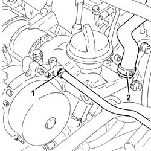
Applies to: engines: 1.9 JTD 16V; all production periods
1. Disconnect the electrical connection from the engine coolant temperature sensor.
| Name | Connector |
|---|---|---|
1 | Engine temperature sender unit |
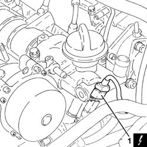
Applies to: engines: 1.9 JTD 16V; all production periods
1. Undo the bolts (1a) and remove the engine oil filler (1b).
2. Remove the gasket.
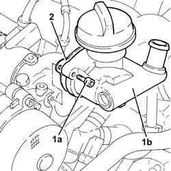
Applies to: engines: 1.9 JTD 16V; all production periods
1. Undo bolts (1a) and remove vacuum unit (1b).
2. Remove the gasket.
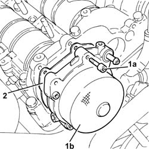
Applies to: engines: 1.9 JTD 16V; all production periods
1. Undo the bolts (1a), (1b), and remove the camshaft housing assembly (1c).
2. Remove the gasket.
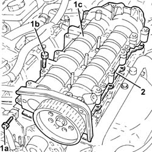
Applies to: engines: 1.9 JTD 16V; all production periods
1. Remove the valve rocker arms.
2. Remove the hydraulic tappets.
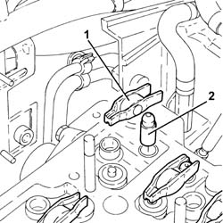
Applies to: engines: 1.9 JTD 16V; all production periods
1. Disconnect the electrical connections from the heater plugs.
| Name | Connector |
|---|---|---|
1 | Heater plug |
2. Undo and remove the heater plugs.
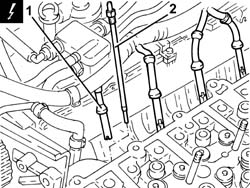
Applies to: engines: 1.9 JTD 16V; all production periods
1. Disconnect the electrical connection from the turbocharger vane actuator solenoid.
| Name | Connector |
|---|---|---|
1 | Variable geometry turbine solenoid valve |
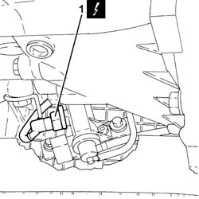
Applies to: engines: 1.9 JTD 16V; all production periods
1. Disconnect the electrical connection from the air flow meter.
| Name | Connector |
|---|---|---|
1 | Air flow meter |
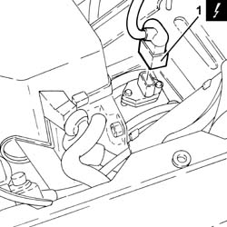
Applies to: engines: 1.9 JTD 16V; all production periods
1. Disconnect the electrical connection from the E.G.R. valve.
| Name | Connector |
|---|---|---|
1 | EGR solenoid |
2. Disconnect the electrical connection from the excess pressure sensor.
| Name | Connector |
|---|---|---|
2 | Turbocharging sensor |
Release the wiring from the bands near the thermostat.
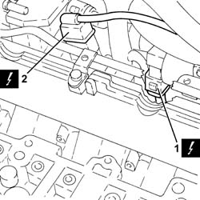
Applies to: engines: 1.9 JTD 16V; all production periods
1. Loosen the band and disconnect the coolant return pipe from the engine coolant reservoir, thermostat side.
2. Loosen the band and disconnect the coolant outlet pipe from the cylinder head, engine coolant return pipe to the coolant reservoir side.
3. Loosen the band and disconnect the flexible coolant return pipe from the rigid coolant return pipe to the engine coolant reservoir.
4. Undo the bolts (4a) and remove hose (4b) carrying coolant to the coolant supply reservoir.
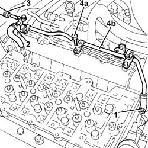
Applies to: engines: 1.9 JTD 16V; all production periods
1. Loosen the band and disconnect the air intake hose from the connector on the throttle casing.
Applies to: engines: 1.9 JTD 16V; all production periods
1. Undo the bolts (1a) and remove the connector on the throttle body (1b) complete with gasket (1c).
Applies to: engines: 1.9 JTD 16V; all production periods
1. Disconnect the vacuum pipe from the pneumatic valve on the throttle body.
2. Undo the bolts (2a) and remove the electropneumatically controlled throttle body (2b) complete with gasket (2c).
Applies to: engines: 1.9 JTD 16V; all production periods
Disconnect the vacuum pipe from the three-way connector on the brake servo vacuum intake pipe.
Disconnect the intermediate coupling for the vacuum pipe for the turbocharger vane position control actuator solenoid valve.
1. Loosen the band and disconnect the upper coolant inlet hose to the radiator, thermostat side.
2. Loosen the band and disconnect the coolant return pipe to the climate control heater, thermostat side.
3. Loosen the band and disconnect the coolant supply pipe to the water/exhaust gas heat exchanger for the E.G.R. system, thermostat side.
4. Loosen the band and disconnect the coolant outlet pipe from the water/exhaust gas heat exchanger for the E.G.R. system, heat exchanger side.
Applies to: engines: 1.9 JTD 16V; all production periods
1. Undo the bolts (1a) and remove the thermostat (1b) complete with O-Ring (1c).
Applies to: engines: 1.9 JTD 16V; all production periods
1. Loosen the collar fastening the E.G.R. system water/exhaust gas heat exchanger, exhaust gas inlet pipe side.
2. Undo the bolts fixing the exhaust gas outlet pipe to the water/exhaust gas heat exchanger for the E.G.R. system, E.G.R. system solenoid valve side.
3. Undo the bolts (3a) and remove the E.G.R. system water/exhaust gas heat exchanger (3b) complete with exhaust gas pipe (3c).
Applies to: engines: 1.9 JTD 16V; all production periods
1. Undo the nuts (1a) and move the oil vapour recovery pipe mounting bracket (1b) aside.
2. Undo the bolts (2a) and remove the E.G.R. system solenoid valve (2b).
3. Remove the gasket.
Applies to: engines: 1.9 JTD 16V; all production periods
1. Disconnect the rapid attachment for the fuel return pipe from the fuel filter, return manifold pipe side.
2. Disconnect the rapid attachment for the fuel return pipe to the tank, return manifold pipe side.
3. Loosen the band and disconnect the fuel return pipe from the pressure pump, fuel return manifold pipe side.
Applies to: engines: 1.9 JTD 16V; all production periods
1. Undo the bolts (1a) and remove the fuel return manifold pipe (1b) complete with the pipe from the injectors to the fuel recovery manifold (1c).
Applies to: engines: 1.9 JTD 16V; all production periods
1. Undo the bolt fixing the guide pipe for the engine oil dipstick to the pressure pump mounting.
2. Disconnect the electrical connection from the fuel pressure regulator.
| Name | Connector |
|---|---|---|
2 | Fuel pressure regulator |
Release the electrical wiring from the band and move it to the side.
Applies to: engines: 1.9 JTD 16V; all production periods
1. Loosen the band and disconnect the condensation oil recovery pipe from the crankcase sump.
Applies to: engines: 1.9 JTD 16V; all production periods
1. Loosen the band and disconnect the oil vapour recovery pipe from the separator.
2. Loosen the band and disconnect the oil vapour recirculation pipe from separator.
Applies to: engines: 1.9 JTD 16V; all production periods
Disconnect the electrical connection from the solenoid on the vacuum tank.
| Name | Connector |
|---|---|---|
- | Butterfly casing solenoid valve |
1. Undo the bolts (1a) and remove the mounting bracket (1b) complete with oil vapour separator (1c) and vacuum reservoir (1d).
Applies to: engines: 1.9 JTD 16V; all production periods
1. Stop the pressure pump pulley from rotating using two bolts.
2. Undo the pressure pump pulley nut.
Undo the two bolts fitted previously to stop the rotation of the pressure pump pulley.
Applies to: engines: 1.9 JTD 16V; all production periods
1. Remove the pressure pump pulley (1a) using the tool (1b).
| Name | Country |
|---|---|---|
1b | Extractor | 1.860.854.001 |
Applies to: engines: 1.9 JTD 16V; all production periods
1. Undo nuts (1a) and remove pressure pump (1b) from its mount.
Applies to: engines: 1.9 JTD 16V; all production periods
1. Disconnect the electrical connection from the engine oil pressure warning light switch.
| Name | Connector |
|---|---|---|
1 | Engine oil pressure sensor |
2. Disconnect the electrical connection for the engine oil level sensor.
| Name | Connector |
|---|---|---|
2 | Engine oil level sensor |
3. Disconnect the electrical connection for the rpm sensor.
| Name | Connector |
|---|---|---|
3 | RPM sensor |
Applies to: engines: 1.9 JTD 16V; all production periods
1. Disconnect the earth lead from the alternator.
| Name | Connector |
|---|---|---|
1 | Alternator |
2. Disconnect the earth lead from the starter motor.
| Name | Connector |
|---|---|---|
2 | Starter' motor |
Applies to: engines: 1.9 JTD 16V; all production periods
1. Disconnect the electrical connection from the pre-heating control unit.
| Name | Connector |
|---|---|---|
1 | Plug preheating control unit |
Applies to: engines: 1.9 JTD 16V; all production periods
1. Undo the bolts (1a) and remove the power steering pump drive pulley (1b).
Applies to: engines: 1.9 JTD 16V; all production periods
1. Undo the bolts securing the power steering pump to its mounting.
Applies to: engines: 1.9 JTD 16V; all production periods
Remove the guide tube complete with engine oil dipstick.
1. Undo the bolts (1a) and remove the pressure pump mounting (1b).
Applies to: engines: 1.9 JTD 16V; all production periods
1. Undo the nuts (1a) and remove the air chamber assembly (1b) complete with gasket (1c).
Applies to: engines: 1.9 JTD 16V; all production periods
1. Loosen the band and disconnect the system supply pipe from the water pump rigid inlet pipe.
2. Loosen the band and disconnect the coolant outlet pipe from the climate control heater, water pump rigid inlet pipe side.
3. Undo the bolts (3a) and remove the coolant inlet rigid pipe to the water pump (3b).
Remove the gasket.
Applies to: engines: 1.9 JTD 16V; all production periods
1. Undo the bolts (1a) and remove the exhaust manifold heat shield (1b).
Applies to: engines: 1.9 JTD 16V; all production periods
1. Undo the nuts (1a) and remove the upper exhaust manifold heat shield (1b).
Applies to: engines: 1.9 JTD 16V; all production periods
1. Undo the nuts fixing the front section of the exhaust pipe to the catalytic pre-converter.
2. Undo the nuts fixing the front section of the exhaust pipe to the catalytic converter.
3. Remove the front exhaust pipe section complete with seals.
Applies to: engines: 1.9 JTD 16V; all production periods
1. Disconnect the vacuum pipe from the turbocharger variable geometry control actuator.
2. Loosen the band and disconnect the air supply hose between the turbocharger and the heat exchanger, turbocharger side.
3. Loosen the band and disconnect the corrugated air intake sleeve to the turbocharger, turbocharger side.
Applies to: engines: 1.9 JTD 16V; all production periods
1. Undo the bolts (1a) and the nuts (1b) fixing the catalytic preconverter mounting bracket.
2. Undo the bolts securing the engine oil return pipe from the turbocharger, engine crankcase side.
Applies to: engines: 1.9 JTD 16V; all production periods
1. Undo the connector (1a) and disconnect engine oil supply pipe to the turbocharger (1b), crankcase side.
Applies to: engines: 1.9 JTD 16V; all production periods
1. Loosen the collar (1a) and remove the catalytic preconverter (1b).
2. Keep the catalytic preconverter mounting bracket.
Applies to: engines: 1.9 JTD 16V; all production periods
1. Undo the nuts (1a) and remove the exhaust manifold (1b) complete with turbocharger (1c).
2. Remove the exhaust manifold gasket.
Applies to: engines: 1.9 JTD 16V; all production periods
1. Undo the bolts (1a) and remove the lower cylinder head assembly (1b).
2. Remove the cylinder head gasket.
3. Remove the locating bushes.
Applies to: engines: 1.9 JTD 16V; all production periods
Refitting
RemovingPosition the cylinder head centring bushes on the cylinder block/crankcase.
Fit a new cylinder head gasket, taking care that it is the same thickness as the old one.
Position the cylinder head on the crankcase.
1. Tighten the cylinder head bolts (1a) to the recommended torque using the angular tightening tool (1b).
| Fastening | Component | Ø | Value (daNm) |
|---|---|---|---|---|
1a | Bolt | CYLINDER HEAD | M12 | (Engine crankcase side 62 68 90 90 90 |
| Name | Country |
|---|---|---|
1b | Protractor | 1.860.942.000 |
Applies to: engines: 1.9 JTD 16V; all production periods
1. Place the exhaust manifold gasket in the housing.
2. Place the exhaust manifold (2a) complete with turbocharger (2b), back in its housing and fix it tightening the nuts (2c) to the recommended torque.
| Fastening | Component | Ø | Value (daNm) |
|---|---|---|---|---|
2c | Nut | EXHAUST MANIFOLD/S | M8 | (Cylinder head side) 2.3 ÷ 3.3 |
Applies to: engines: 1.9 JTD 16V; all production periods
Place the catalytic preconverter complete with mounting back in its housing and fasten it to the turbocharger using the collar.
1. Connect the engine oil delivery pipe to the turbocharger (1a), crankcase side, and tighten the connector (1b) to the recommended torque.
| Fastening | Component | Ø | Value (daNm) |
|---|---|---|---|---|
1b | Connector | OIL DELIVERY PIPE TO TURBO | M12 | (Engine crankcase side) 1.4 ÷ 1.7 |
Applies to: engines: 1.9 JTD 16V; all production periods
Tighten the bolt fixing the enigne oil return pipe from the turbocharger, engine crankcase side.
Tighten the bolts and the nuts fixing the catalytic preconverter mounting bracket.
Connect the corrugated air intake sleeve to the turbocharger, turbocharger side, and tighten the band.
Connect the air supply hose between the turbocharger and the heat exchanger, turbocharger side, and secure with a band.
Connect the vacuum pipe from the turbocharger variable geometry control actuator.
1. Place the front section of the exhaust pipe with gaskets back in its housing.
2. Tighten the nuts securing the exhaust pipe front section to the catalytic converter to the specified torque.
| Fastening | Component | Ø | Value (daNm) |
|---|---|---|---|---|
2 | Nut | PRE-CAT CONVERTOR/CAT CONVERTOR PIPE | M8 | (Catalytic converter side) 2.3 ÷ 2.8 |
3. Tighten the nuts fixing the front section of the exhaust pipe to the catalytic preconverter to the recommended torque.
| Fastening | Component | Ø | Value (daNm) |
|---|---|---|---|---|
3 | Nut | PRE-CAT CONVERTOR/CAT CONVERTOR PIPE | M8 |
Applies to: engines: 1.9 JTD 16V; all production periods
Place the upper exhaust manifold heat shield back in its housing and fix it using the nuts.
Place the lower exhaust manifold heat shield back in its housing and fix it using the bolts.
Place the water pump rigid inlet pipe, complete with gasket, back in its housing and secure it with the bolts.
Connect the coolant return hose from the climate control heater on the side of the rigid inlet pipe to the water pump and do up the band.
Connect the system supply pipe to the water pump rigid inlet pipe and tighten the band.
1. Refit air chamber (1a) complete with gasket (1b) and secure it by tightening nuts (1c) to the recommended torque.
| Fastening | Component | Ø | Value (daNm) |
|---|---|---|---|---|
1c | Nut | INLET MANIFOLD | M8 | (Cylinder head side) 2.3 ÷ 2.8 |
Applies to: engines: 1.9 JTD 16V; all production periods
1. Place the pressure pump support (1a) back in its housing and secure it tightening the bolts (1b).
| Fastening | Component | Ø | Value (daNm) |
|---|---|---|---|---|
1b | Bolt | INJECTION PRESSURE PUMP MOUNT | M8 | (Engine crankcase side) 2.3 ÷ 2.8 |
Applies to: engines: 1.9 JTD 16V; all production periods
Refit the guide tube and engine oil dipstick.
1. Place the power assisted steering pump back in its housing and fix it tightening the bolts to the recommended torque.
| Fastening | Component | Ø | Value (daNm) |
|---|---|---|---|---|
1 | Bolt | POWER STEERING PUMP | M8 | (Support side) 2.3 ÷ 2.8 |
Applies to: engines: 1.9 JTD 16V; all production periods
1. Place the power assisted steering pump pulley (1a) back in its housing and fix it tightening the bolts (1b) to the recommended torque.
| Fastening | Component | Ø | Value (daNm) |
|---|---|---|---|---|
1b | Bolt | POWER STEERING PUMP DRIVE PULLEY | M8 | (Power assisted steering pump side) 2.3 ÷ 2.8 |
Applies to: engines: 1.9 JTD 16V; all production periods
Connect the electrical connection to the pre-heating control unit.
Connect the earth lead to the starter motor.
Connect the earth lead to the alternator.
Connect the electrical connection for the rpm sensor.
Connect the electrical connection for the engine oil level sensor.
Connect the electrical connection to the engine oil pressure warning light switch.
1. Fit the clutch pump (1a) back in its housing and tighten the nuts (1b) to the specified torque.
| Fastening | Component | Ø | Value (daNm) |
|---|---|---|---|---|
1b | Nut | PRESSURE PUMP | M8 | (Support side) 2.3 ÷ 2.8 |
Applies to: engines: 1.9 JTD 16V; all production periods
1. Replace the pressure pump pulley in its housing.
2. Stop the pressure pump pulley from rotating using two bolts.
3. Tighten the pressure pump pulley nut to torque.
| Fastening | Component | Ø | Value (daNm) |
|---|---|---|---|---|
3 | Nut | PRESSURE PUMP CONTROL PULLEY | M14 | 4.5 ÷ 5.5 |
Undo the two bolts fitted previously to stop the rotation of the pressure pump pulley.
Applies to: engines: 1.9 JTD 16V; all production periods
Place the mounting bracket complete with oil vapour separator and vacuum reservoir back in its housing and secure it using the bolts.
Connect the electrical connection to the solenoid on the vacuum tank.
Connect the oil vapour recirculation pipe to the separator and tighten the band.
Connect the oil vapour recovery pipe to the separator and tighten the band.
Connect the condensation oil recovery pipe to the crankcase sump and tighten the band.
Place the electrical wiring back in its housing and fix it to the band.
Connect the electrical connection to the fuel pressure regulator.
Tighten the bolt fixing the engine oil dipstick guide pipe to the pressure pump mounting.
Place the fuel return manifold pipe complete with the pipe from the injectors to the fuel recovery manifold back in its housing and secure it using the bolts.
Connect the fuel return pipe to the pressure pump, fuel return manifold pipe side and tighten the band.
Connect the rapid attachment for the fuel return pipe to the tank, fuel return manifold pipe side.
Connect the rapid attachment for the fuel return pipe from the fuel filter, return manifold pipe side.
1. Place the E.G.R. system solenoid valve (1a) complete with gasket (1b) back in its housing and fasten it tightening the bolts (1c) to the recommended torque.
| Fastening | Component | Ø | Value (daNm) |
|---|---|---|---|---|
1c | - | - | - | - |
2. Place the oil vapour recovery pipe mounting bracket (2a) back in its housing and secure it using the nuts (2b).
Applies to: engines: 1.9 JTD 16V; all production periods
1. Place the water/exhaust gas heat exchanger for the E.G.R. system (1a), complete with exhaust gas outlet pipe (1b) back in its housing.
2. Tighten the bolts fixing the exhaust gas outlet pipe to the water/exhaust gas heat exchanger for the E.G.R. system, E.G.R. system solenoid valve side to the recommended torque.
| Fastening | Component | Ø | Value (daNm) |
|---|---|---|---|---|
2 | Connector | PIPE FROM PUMP/ACTUATOR UNIT | M12 | (Hydraulic actuator unit side) 1.4 ÷ 1.8 |
3. Tighten the collar fixing the water/exhaust gas heat exchanger for the E.G.R. system.
Applies to: engines: 1.9 JTD 16V; all production periods
1. Refit thermostat (1a), complete with O-ring (1b) and secure by tightening the bolts (1c) to the recommended torque.
| Fastening | Component | Ø | Value (daNm) |
|---|---|---|---|---|
1c | - | - | - | - |
Applies to: engines: 1.9 JTD 16V; all production periods
Connect the coolant outlet pipe from the E.G.R. water/exhaust gas heat exchanger, heat exchanger side, and tighten the band.
Connect the engine coolant supply pipe to the EGR system water/exhaust gas heat exchanger, thermostat side and tighten the band.
Connect the engine coolant return pipe from the climate control system heater, thermostat side, and tighten the band.
Connect the upper coolant inlet hose to the radiator, thermostat side, and tighten the band.
Connect the intermediate coupling for the vacuum pipe for the turbocharger vane position control actuator solenoid valve.
Connect the vacuum pipe to the three-way connector on the brake servo vacuum intake pipe.
1. Replace the pneumatically-controlled throttle body (1a), complete with gasket (1b), back in its housing and secure by tightening bolts (1c) to the recommended torque.
| Fastening | Component | Ø | Value (daNm) |
|---|---|---|---|---|
1c | - | - | - | - |
2. Connect the vacuum pipe to the pneumatic valve on the throttle body.
Applies to: engines: 1.9 JTD 16V; all production periods
1. Replace the connector on the throttle body (1a), complete with gasket (1b), back in its housing and secure by tightening bolts (1c) to the recommended torque.
| Fastening | Component | Ø | Value (daNm) |
|---|---|---|---|---|
1c | - | - | - | - |
Applies to: engines: 1.9 JTD 16V; all production periods
Connect the air inlet hose to the connector on the throttle casing and tighten the band.
Place the coolant return pipe to the engine cooling system reservoir back in its housing and fix it using the bolts.
Connect the flexible pipe to the coolant return pipe to the engine coolant reservoir and tighten the band.
Connect the coolant oulet pipe from the cylinder head, engine coolant return pipe to the supply reservoir side and tighten the band.
Connect the engine coolant return pipe to the supply reservoir, thermostat side and tighten the band.
Fasten the electrical wiring to the bands near the thermostat.
Connect the electrical connection to the excess pressure sensor.
Connect the electrical connection to the EGR solenoid.
Connect the electrical connection to the air flow meter.
Connect the electrical connection to the turbocharger vane actuator solenoid.
1. Place the heater plugs back in their housings and tighten them to the recommended torque.
| Fastening | Component | Ø | Value (daNm) |
|---|---|---|---|---|
1 | - | GLOW PLUGS | M9 | (Cylinder head side) 0.7 ÷ 0.9 |
2. Connect the electrical connections to the heater plugs.
Applies to: engines: 1.9 JTD 16V; all production periods
Place the hydraulic tappets in their housings.
Place the valve rocker arms back in their housings.
Place the upper cylinder head gasket back in its housing.
1. Remove the plugs (1a) and fit the camshaft timing tools (1b) in the upper cylinder head.
| Name | Country |
|---|---|---|
1b | Gauge | 1.870.986.900 |
Remove the inlet side camshaft timing tool and tighten the plug.
Applies to: engines: 1.9 JTD 16V; all production periods
1. Place the complete upper cylinder head (1a) back in its housing and secure it tightening the bolts (1b) to the recommended torque.
| Fastening | Component | Ø | Value (daNm) |
|---|---|---|---|---|
1b | Bolt | CYLINDER HEAD EXTENSION | M8 | (Cylinder head side 23 28 |
| Fastening | Component | Ø | Value (daNm) |
|---|---|---|---|---|
1b | Bolt | INJECTION PRESSURE PUMP MOUNT | M8 | (Cylinder head side) 2.3 ÷ 2.8 |
2. Loosen the exhaust side camshaft toothed drive pulley fixing bolt.
Applies to: engines: 1.9 JTD 16V; all production periods
1. Undo the bolt for the crankcase front cover shown in the diagram.
Temporarily fit the timing drive belt on the drive pulley.
2. Fit the tool (2a) and secure it using the calibrated screw (2b)
| Name | Country |
|---|---|---|
2a | Template | 1.860.905.000 |
| Name | Country |
|---|---|---|
2b | Calibrated screw | 1.860.905.010 |
Applies to: engines: 1.9 JTD 16V; all production periods
1. Completely fit the timing belt.
2. Use a screwdriver to lever in the hole (2a) until the reference on the tensioner (2b) lines up with the reference hole (2c) and, in this position, tighten the tensioner nut (2d) to torque.
| Fastening | Component | Ø | Value (daNm) |
|---|---|---|---|---|
2d | Nut | MOBILE TIMING TENSIONER | M10 | 4.2 ÷ 5.2 |
3. Tighten the exhaust side camshaft toothed drive pulley fixing bolt to the recommended torque.
| Fastening | Component | Ø | Value (daNm) |
|---|---|---|---|---|
3 | Bolt | TIMING GEAR DRIVEN PULLEYS | M12 | (Exhaust camshaft side) 10.8÷13.2 |
Applies to: engines: 1.9 JTD 16V; all production periods
Remove the timing tools.
| Name | Country |
|---|---|---|
- | Gauge | 1.870.986.900 |
| Name | Country |
|---|---|---|
- | Template | 1.860.905.000 |
| Name | Country |
|---|---|---|
- | Calibrated screw | 1.860.905.010 |
Rotate the crankshaft through two revolutions.
Check once again that the timing is correct by refitting the timing tools.
Check that the tensioning references on the timing belt tensioner are aligned.
Tighten the bolt for the crankcase front cover previously removed.
Tighten the plug in the camshaft housing for fitting the exhaust side timing tool.
1. Place the vacuum unit (1a), complete with gasket (1b), back in its housing and secure it tightening the bolts (1c) to the recommended torque.
| Fastening | Component | Ø | Value (daNm) |
|---|---|---|---|---|
1c | Bolt | BRAKE SERVO VACUUM PUMP | M6 | (Cylinder head side 05 06 50 |
Applies to: engines: 1.9 JTD 16V; all production periods
1. Place the engine oil filler (1a), complete with gasket (1b), back in its housing and secure it tightening the bolts (1c) to the recommended torque.
| Fastening | Component | Ø | Value (daNm) |
|---|---|---|---|---|
1c | Bolt | OIL FILTER FITTING | M6 | (Cylinder head side 08 10 |
Applies to: engines: 1.9 JTD 16V; all production periods
Connect the electrical connection to the engine coolant temperature sensor.
Connect the oil vapour recovery pipe to the engine oil filler and tighten the band.
Connect the vacuum pipe to the brake servo and tighten the band.
.Proceed with refitting 5530B10 battery - r+r .
1. Place the single fuel manifold pipe (1a), complete with fuel pressure sensor (1b), back in its housing and secure it tightening the bolts (1c) to the recommended torque.
| Fastening | Component | Ø | Value (daNm) |
|---|---|---|---|---|
1c | Bolt | INJECTOR FUEL MANIFOLD (DIESEL) | M8 | (Camshaft housing side 23 28 |
2. Connect the electrical connection to the fuel pressure sensor.
Applies to: engines: 1.9 JTD 16V; all production periods
1. Place the pipe from the pressure pump to the single fuel manifold back in its housing and fix it using the connectors without tightening them.
2. Tighten the connector for the pipe from the pressure pump to the single fuel manifold, pump side, to the recommended torque using a suitable spanner.
| Fastening | Component | Ø | Value (daNm) |
|---|---|---|---|---|
2 | Connector | PRESSURE PUMP LINE TO FUEL MANIFOLD | M14 | (Pressure pump side 22 24 |
3. Tighten the connector for the pipe from the pressure pump to the single fuel manifold, fuel manifold side, to the recommended torque using a suitable spanner.
| Fastening | Component | Ø | Value (daNm) |
|---|---|---|---|---|
3 | Connector | PRESSURE PUMP LINE TO FUEL MANIFOLD | M14 | (Fuel manifold side 22 24 |
Applies to: engines: 1.9 JTD 16V; all production periods
1. Refit the injectors (1a) complete with brackets and secure by tightening the nuts (1b) to the specified torque.
| Fastening | Component | Ø | Value (daNm) |
|---|---|---|---|---|
1b | Nut | INJECTORS(DIESEL) | M8 | (Camshaft housing side) 2.3 ÷ 2.8 |
Applies to: engines: 1.9 JTD 16V; all production periods
1. Fit the new pipes from the fuel manifold to the injectors and secure them using the connectors without tightening them.
2. Tighten the connectors for the pipes from the fuel manifold to the injectors, injector side, to the recommended torque using a suitable spanner.
| Fastening | Component | Ø | Value (daNm) |
|---|---|---|---|---|
2 | Connector | FUEL MANIFOLD LINE TO INJECTORS | M12 | (Injector side) 2.2 ÷ 2.4 |
3. Tighten the connectors for the pipes between the fuel manifold and the injectors, fuel manifold side, to the recommended torque using a suitable spanner.
| Fastening | Component | Ø | Value (daNm) |
|---|---|---|---|---|
3 | Connector | FUEL MANIFOLD LINE TO INJECTORS | M12 | Fuel manifold side 22 24 |
4. Connect the pipe from the injectors to the fuel recovery manifold (4a) to the injectors pushing it until the clips (4b) can be heard clicking into place.
Applies to: engines: 1.9 JTD 16V; all production periods
Place the electrical wiring back in its housing and tighten the cable duct fixing bolts.
Fasten the electrical wiring using the band on the timing cover.
Connect the electrical connection to the air conditioner compressor.
Connect the electrical connection to the cam angle sensor
Connect the electrical connections to the injectors.
1. Fit the bracket on the engine for the reaction rod (1a) and fix it tightening the bolts (1b) and (1c) to the recommended torque.
| Fastening | Component | Ø | Value (daNm) |
|---|---|---|---|---|
1b | - | GLOW PLUGS | M8 | (Cylinder head side) 0.9 ÷ 1.0 |
| Fastening | Component | Ø | Value (daNm) |
|---|---|---|---|---|
1c | Nut | CATALYTIC CONVERTER (ONE) | M8 | (Cylinder head side) 2.3 ÷ 2.8 |
Applies to: engines: 1.9 JTD 16V; all production periods
Proceed with refitting 1032D12 timing system protective cover(s) - r + r
Proceed with refitting 1092G20 engine component single belt fixed tensioner - one - r + r
Proceed with refitting 1092A10 Crankshaft services PULLEY - R.R.
Proceed with refitting 1092G10 single engine belt r r
Proceed with refitting 7055B91 Right front WHEEL ARCH LINER - R.R.
Proceed with refitting 7055B54 under-engine guard - r r
Proceed with refitting 4450B04 right front wheel r r
Proceed with refitting 1060G80 ds electric injection control unit - r r
Proceed with refitting 1008C10 power unit upper reaction link r r
Refill the engine cooling system with coolant 0010T20 coolant change .
Connect the negative (-) battery terminal
Proceed with refitting 1016A10 sound-proofing cover - r + r
Proceed with refitting 7025A14 Bonnet LID - R.R.
Proceed with refitting 7025A12 Engine front sound insulation COVER - R.R.
Remove the car from the ramps.
Topics linked from this page (48)
- 0010T20 coolant change
- 0010T21 coolant check density and top up if necessary
- 1008C10 power unit upper reaction link r r
- 1008C14 engine link bracket - r r
- 1016A10 sound-proofing cover - r + r
- 1016A20 single cam cover - r + r and replace gasket
- 1016A40 ignition coil cover on cylinder head- r+r
- 1032B10 toothed timing belt - r + r for timing adjustment or replacement
- 1032D12 timing system protective cover(s) - r + r
- 1056B60 single fuel manifold pipe, with injectors - r + r
- 1060G80 ds electric injection control unit - r r
- 1072B50 sleeves connecting air capacity box to inlet manifold is - r+r
- 1072C44 exhaust manifold heat shield on bulkhead - r+r
- 1072D10 modular inlet manifold - r+r
- 1084A10 ENGINE OIL - Check level and top up, if necessary
- 1092A10 Crankshaft services PULLEY - R.R.
- 1092E10 counter-rotating shaft drive toothed belt - r + r
- 1092G10 single engine belt r r
- 1092G14 engine component single belt mobile tensioner - r + r
- 1092G20 engine component single belt fixed tensioner - one - r + r
- 4450B04 right front wheel r r
- 4450B10 Front WHEEL (one) - R.R.
- 5510C14 ignition coil/s - r+r
- 5530B10 battery - r+r
- 7025A12 Engine front sound insulation COVER - R.R.
- 7025A14 Bonnet LID - R.R.
- 7055B54 under-engine guard - r r
- 7055B64 Engine compartment DUST shield in front wheel arch (one), left or right - R.R.
- 7055B91 Right front WHEEL ARCH LINER - R.R.
- A1B Battery ( Connectors )
- A10 Alternator
- A20 Starter' motor
- A40 Heater plug
- K30 Engine oil pressure sensor (switch)
- K32 Engine oil level sensor
- K36 Engine temperature sender unit
- K41 Air flow meter ( ENGINE )
- K46 RPM sensor
- K47 Timing sensor.
- K82 Turbocharging sensor
- K83 Fuel pressure sensor
- L20 Air conditioning compressor engagement electro-magnet
- L30 EGR solenoid
- L36 Variable geometry turbine solenoid valve
- L62 Butterfly casing solenoid valve
- M15 Plug preheating control unit
- N70 Injector (cyl. 1)
- N77 Fuel pressure regulator